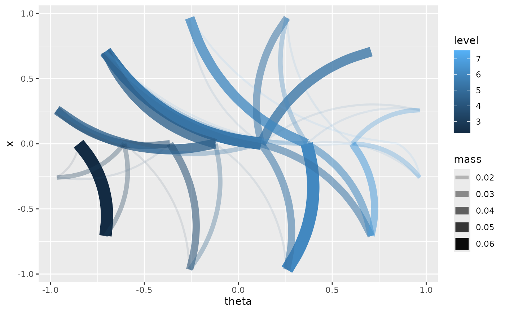

Adds mass-flow curves for circular-linear data. Use this layer with
ggplot2::ggplot(data, ggplot2::aes(x = theta, y = response)).
Usage
geom_phase_loom(
mapping = NULL,
data = NULL,
position = "identity",
n_sectors = 48,
n_x_bins = 24,
min_mass = 0.002,
max_flows = 180,
mass_type = c("joint", "conditional"),
curvature = 0.24,
...,
show.legend = NA,
inherit.aes = TRUE
)Arguments
- mapping, data, position, show.legend, inherit.aes
Standard ggplot2 layer arguments.
- n_sectors
Number of angular sectors.
- n_x_bins
Number of bins for the linear response.
- min_mass
Minimum mass to draw.
- max_flows
Maximum number of flows to draw. Use
NULLto draw all.- mass_type
Either
"joint"or"conditional".- curvature
Curvature passed to
ggplot2::geom_curve().- ...
Additional arguments passed to the geom.
See also
Other cylindrical dependence layers:
stat_circular_topography(),
stat_statistical_orbit(),
stat_statistical_orbit_ribbon()
Examples
dat <- simulate_cylindrical(n = 80, seed = 1)
ggplot2::ggplot(dat, ggplot2::aes(x = theta, y = x)) +
geom_phase_loom(n_sectors = 12, n_x_bins = 8, min_mass = 0)
